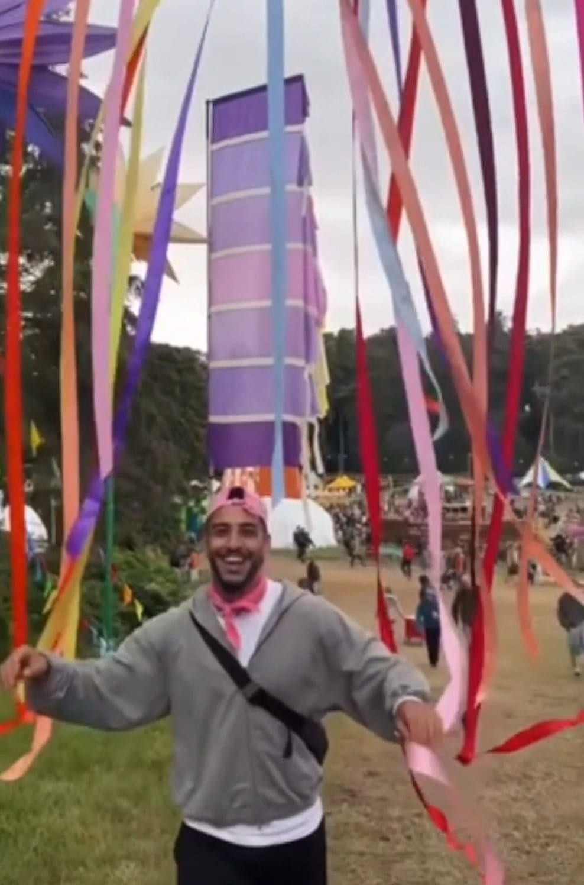

Geef je dag een boost
Dit zijn gekoelde klassiekersRefresh and Reset
Met Starbucks® chilled classics


Kun je geen keuze maken?
Klik hier om jouw perfecte gekoelde koffie te vinden.
Doe de quizWat is er gaande in de Starbucks-community?
- 

Over ons
Het begon allemaal in 1971
Elke dag gaan we naar ons werk in de hoop twee dingen te doen: geweldige koffie met onze vrienden te delen en helpen de wereld een beetje beter te maken.
Kom hier meer over te weten
Duurzaamheid
Van boon tot koffie
Starbucks zet zich in voor 100% ethisch verantwoorde koffie-inkoop samen met Conservation International volgens de normen van het Coffee and Farmer Equity (C.A.F.E.) Practices-programma.
C.A.F.E. C.A.F.E. Practices is een verificatieprogramma dat landbouwbedrijven toetst aan economische, sociale en milieucriteria, allemaal bedoeld om transparante, winstgevende en duurzame koffieteeltmethodes te bevorderen en tegelijkertijd het welzijn van koffieboeren en -arbeiders, hun gezinnen en hun gemeenschappen te beschermen.
Kom meer te weten